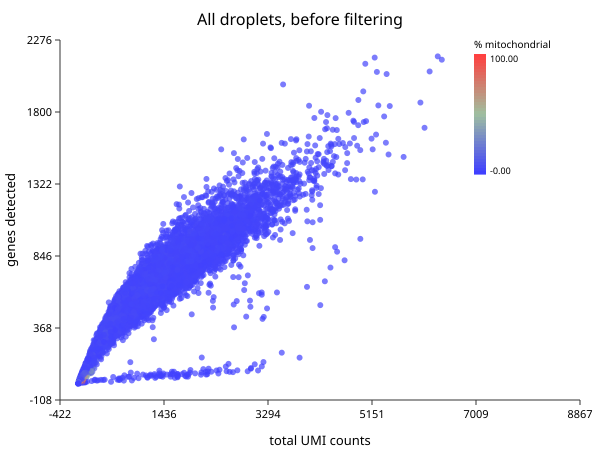
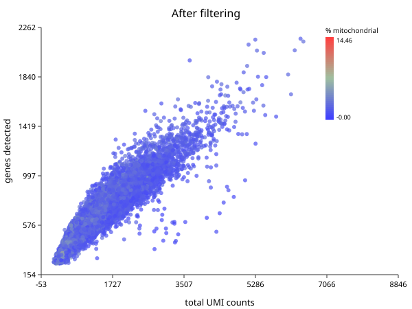

Quality Control
Follows HBC lessons 03 (QC setup), 04 (Cell Ranger QC), and 05 (Quality control).
The thing being filtered is not a cell
The matrix has one column per barcode, and the course is careful to say barcode rather than cell, because 737,280 of them are not cells:
- Empty droplets that caught only ambient RNA — transcripts from cells that lysed during dissociation. Few genes, low counts, and the vast majority of the matrix.
- Dying cells, which leak cytoplasmic RNA while mitochondria stay intact longer, so the mitochondrial fraction climbs as the cytoplasm drains.
- Doublets — two cells in one droplet, appearing as one barcode with roughly twice the content and an impossible hybrid identity.
Look before you cut
sc.qc computes per-cell and per-gene metrics and attaches them without
removing anything.
import "singlecell" as sc
let raw = sc.load("ctrl_raw")
let scored = sc.qc(raw)
write_text("qc-raw.svg",
sc.plot_qc_scatter(scored, "All droplets, before filtering"))

That is every barcode in the run. Two features carry the whole decision.
The dense wedge running up and to the right is the real cells: as a droplet captures more UMIs it detects more distinct genes, and the two rise together.
The flat spur along the bottom is the problem. Those droplets accumulate UMIs without accumulating genes — the signature of low-complexity content: ambient RNA, dying cells, or a population dominated by a handful of transcripts. Neither histogram shows this on its own. A cell with few genes and few UMIs is an empty droplet; few genes but many UMIs is a different animal entirely, and only the joint view distinguishes them.
The enormous blob at the origin is the empty droplets, and it is most of the 737,280.
The three metrics
| Metric | Low means | High means |
|---|---|---|
| UMIs per cell | empty droplet, or a small cell | doublet, or a large cell |
| Genes per cell | empty droplet, low complexity | doublet |
| % mitochondrial | usually fine | dying or stressed cell |
Note the second column. Every one of these has a benign explanation. A plasma cell genuinely has fewer distinct genes because it is devoting itself to antibody transcripts. Cardiomyocytes are genuinely full of mitochondria. A threshold right for PBMCs will delete a real population in heart tissue. This is why the course insists on plotting distributions rather than applying remembered numbers.
Applying the cuts
import "singlecell" as sc
let raw = sc.load("ctrl_raw")
let clean = raw
|> sc.filter_genes(3)
|> sc.filter_cells(250, 100000, 20.0)
println("before: " + str(raw.n_cells) + " droplets, " + str(raw.n_genes) + " genes")
println("after: " + str(clean.n_cells) + " cells, " + str(clean.n_genes) + " genes")
before: 737280 droplets, 33538 genes
after: 15049 cells, 15576 genes
737,280 barcodes down to 15,049 cells, and 33,538 genes to 15,576.
That is close to the course’s result but not the same filter, and the difference is worth being exact about. Theirs has four criteria:
nUMI >= 500 & nGene >= 250 & log10GenesPerUMI > 0.80 & mitoRatio < 0.20
sc.filter_cells expresses two of them — a gene floor and a mitochondrial cap.
It has no UMI floor and no complexity term. Applying all four by hand on this
sample gives 14,847 cells against this chapter’s 15,049: a difference of
202 cells, or 1.3%.
The 202 are mostly low-complexity droplets — high UMI counts spread over few
genes, the flat spur along the bottom of the plot above. The complexity term
log10GenesPerUMI > 0.80 is what removes them, and it is the criterion worth
adding by hand if you are reproducing the course exactly:
import "singlecell" as sc
let raw = sc.load("ctrl_raw")
let m = cell_qc(raw.matrix, raw.genes)
let genes = col(m, "n_genes")
let umis = col(m, "total_counts")
let mito = col(m, "pct_mito")
let keep = range(0, raw.n_cells) |> filter(|i| {
umis[i] >= 500.0 and genes[i] >= 250.0 and mito[i] < 20.0 and
(log10(genes[i]) / log10(umis[i])) > 0.80
})
println("cells: " + str(len(keep)))
cells: 14847
The chapters that follow use the two-criterion form, because it is the one the package exposes and the 1.3% does not change any conclusion here. If you need the course’s numbers exactly, use the block above.
Two filters, in this order and for a reason. filter_genes(3) drops genes seen
in fewer than three cells — a gene detected once cannot support a statistical
claim, and carrying eighteen thousand such genes costs memory and inflates the
multiple-testing burden later. filter_cells(min_genes, max_genes, max_pct_mito)
drops barcodes: the lower bound removes empty droplets, the upper catches
doublets, the mitochondrial cap removes dying cells.
The thresholds here are the course’s: at least 250 genes, mitochondrial fraction under 20%. The upper gene bound is deliberately loose because the lower bound and the mitochondrial cap are doing the work on this dataset.
What survived
import "singlecell" as sc
let clean = sc.load("ctrl_raw")
|> sc.filter_genes(3)
|> sc.filter_cells(250, 100000, 20.0)
write_text("qc-clean.svg", sc.plot_qc_scatter(sc.qc(clean), "After filtering"))

The spur along the bottom is gone and the blob at the origin with it. What remains is the diagonal band, which is what a clean sample looks like.
The mitochondrial cap needs gene symbols
max_pct_mito finds genes whose symbol starts with MT-. If your features file
carries Ensembl IDs (ENSG00000198804) rather than symbols, nothing matches, the
mitochondrial fraction is zero for every cell, and the filter silently does
nothing.
It will not warn you. This dataset’s features.tsv has three columns — Ensembl
ID, symbol, feature type — and sc.load takes the symbol, so the cap works here.
Check that your gene names look like names.
What Cell Ranger knew that you no longer do
The course spends a lesson on Cell Ranger’s web_summary.html. BioLang cannot
read that file, and most of what it reports can be recomputed from the matrix
anyway — cell counts, median genes per cell, UMI distributions.
Two things cannot. Sequencing saturation (how much another lane would buy) and fraction of reads mapped to the transcriptome are properties of the reads, and the reads are gone by the time you have a matrix. If those matter — and for judging whether an experiment was deep enough, they do — read them in Cell Ranger’s viewer before moving on.
Judge the filter by what survives
The only real test of a threshold is whether the biology is still there afterwards. Filter, cluster, and check you still have the populations you expected; if a cell type vanished between raw and filtered, the threshold found it, not the noise.
That check needs clusters, which is Normalization and PCA and then Clustering. QC is not finished until you have been round that loop once.